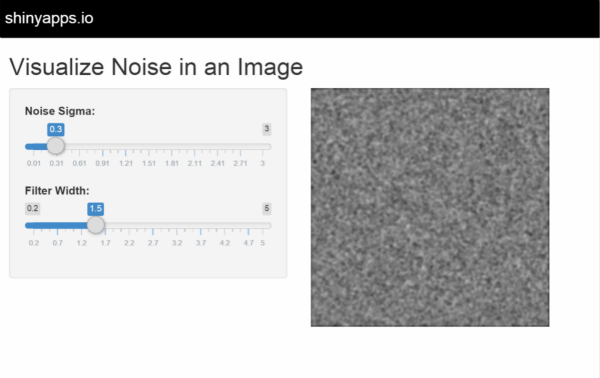
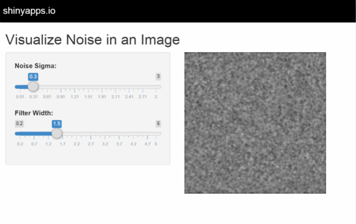
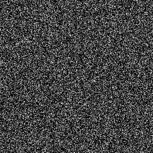
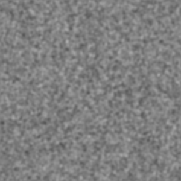
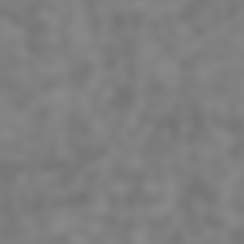

Spatial Filter (formally 2D convolution) replaces an image filter with the weighted average of nearby pixels.
The filtered image is smoother, but the noise becomes correlated between pixels and care must be taken in interpreting resuls.

EYH
Graduate School
Spatial Filter (formally 2D convolution) replaces an image filter with the weighted average of nearby pixels.
The filtered image is smoother, but the noise becomes correlated between pixels and care must be taken in interpreting resuls.

Create a 300 X 300 array of normally diftributed pixel values, mean = 0, with standard deviation set by slider in UI.
Filter with "blur" function in spatstat package. Uses a radial gaussian kernal with standard deviation set by secon slider.
Two input parameters, with a slider control for each:
One ouput:
This app can be modified to allow selection of noise distribution, different kernels (box car, motion blur, edge detect, etc.)
  